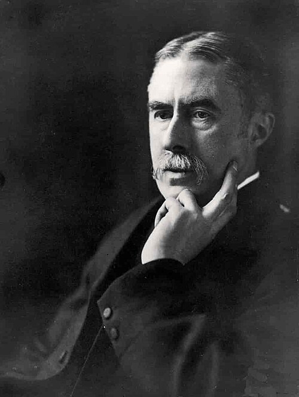
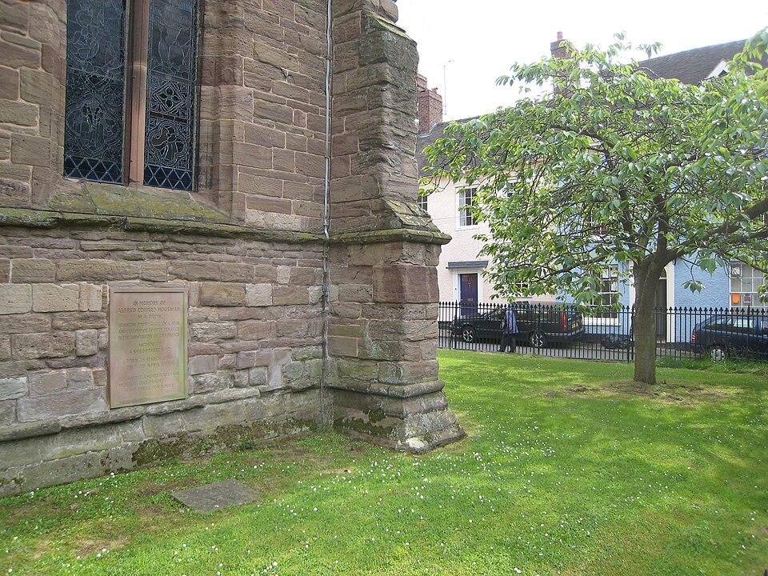
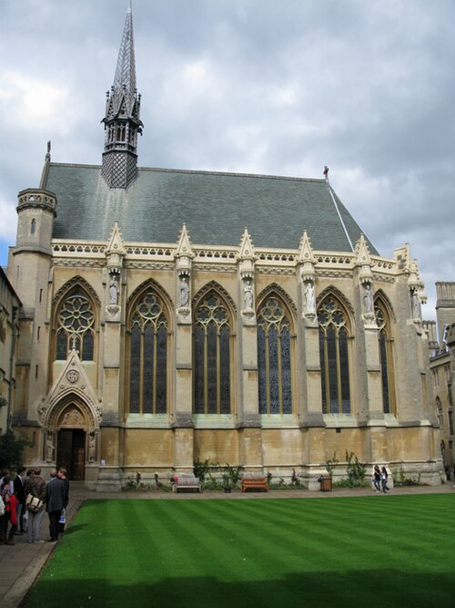

Роман · 1999
День раскаяния
The Remorseful Day — тринадцатый и последний роман об инспекторе Морсе. Русское название рабочее.
- Первое издание
- Macmillan, Лондон, 15 сентября 1999
- Расследуют
- главный инспектор Морс и сержант Льюис
- Главное
- Морс умирает от инфаркта
- Экранизация
- «Инспектор Морс», 15 ноября 2000 — последняя серия; режиссёр Джек Голд, сценарий Стивена Черчетта
Название
Название взято из стихотворения А. Э. Хаусмана «Как ясно, как светло…» из посмертного сборника «Ещё стихи». Оно кончается закатом: день уходит на запад, за пределы зрения и слуха, и безнадёжно опускается под землю «день раскаяния». Хаусман был любимым поэтом и Декстера, и его героя; в сериале Морс читает последнюю строфу вслух.




Завязка
Год назад была убита медсестра Ивонн Харрисон, и дело так и не раскрыли. Здоровье Морса тем временем рушится. Он нехотя берётся за это дело, и у него есть на то личная причина: во время одной из прежних болезней он увлёкся Ивонн и написал ей об этом. Ивонн дарила благосклонность многим, так что подозреваемых хватает, включая любовника её дочери. Письмо Морса нашлось среди улик, и начальство его спрятало. Выясняется, что и у самого Стрейнджа был роман с Ивонн.
Морс умирает от острого инфаркта. Его последние слова Стрейнджу: «Поблагодарите за меня Льюиса».
Развязка — открыть, если роман прочитан
Ивонн погибла от руки собственной дочери Сары: та застала мать со своим любовником. Сериал, по оценке Википедии, в целом верен роману и тоже делает убийцей дочь (там её зовут Сандра).
Морс умирает не на месте, а на больничной койке, когда дело уже раскрыто, и оставляет Льюису небольшое наследство.
Люди
| Имя | Кто это |
|---|---|
| Ивонн Харрисон | Убитая медсестра. |
| Фрэнк Харрисон | Её муж. |
| Сара Харрисон | Их дочь (в сериале Сандра). |
| Джон Баррон | Один из тех, кого подозревают. |
| Гарри Репп | Ещё один подозреваемый. |
| Стрейндж | Начальник Морса, у которого была своя тайна, см. статью. |
Места
| Место | Что там происходит | |
|---|---|---|
| Колледж Эксетер | есть | В сериале Морс падает с сердечным приступом в переднем дворе колледжа; скорая подъезжает со стороны Брод-стрит. |
| Часовня Эксетера | есть | В сериале — репетиция хора, Реквием Форе. |
| Больница Джона Рэдклиффа | есть | Больница в Хедингтоне. |
| Бар «Рэндольфа», «Виктория Армс» | есть | Последние пабы Морса в сериале. |


Реалии
- Хаусман
- Альфред Эдвард Хаусман (1859–1936), латинист и поэт, автор «Шропширского парня». Его прах похоронен у церкви Святого Лаврентия в Ладлоу.
- Реквием Форе
- Заупокойная месса Габриэля Форе (1888), светлая, без «Dies irae». Финальная часть «In Paradisum» — «Да введут тебя ангелы в рай» — звучит в момент, когда Морс падает.
- Премия «Индевор»
- В сериале Морс завещает деньги фонду стипендий для молодых музыкантов, а тело — Рэдклиффской больнице, без отпевания. В пилоте «Льюиса» этот фонд уже носит его имя.
Книга и сериал
Последняя серия «Инспектора Морса» вышла 15 ноября 2000 года. В ролях: Джон Тоу, Кевин Уотли, Т. П. Маккенна (профессор сэр Лайонел Фелпс), Анна Уилсон-Джонс (Сандра Харрисон), Пол Фримен (Фрэнк Харрисон), Мег Дэвис (Ивонн Харрисон), Джесси Бёрдсолл (Джон Баррон), Эдди Уэббер (Гарри Репп), Клэр Холман (Лора Хобсон). Джон Тоу умер в феврале 2002 года.
- Фильм в целом верен роману, но в нём нет попытки Морса скрыть роман Стрейнджа с Ивонн и побочной линии учительницы и подростка Роя Холмса. Добавлен новый подозреваемый — сэр Лайонел Фелпс, начальник Сандры и бывший любовник Ивонн.
- Морс приходит на репетицию хора в часовню Эксетера и падает в его дворе под «In Paradisum» Форе.
- Звучат также «Парсифаль» в машине Льюиса и в финале, Струнный квинтет до мажор Шуберта в квартире Морса, «Спартак» Хачатуряна.
Развязка фильма — открыть
Ивонн убила её дочь Сандра, ударив металлическим костылём, когда узнала, что Джон Баррон спит с ними обеими. Пэдди Флинн, Баррон и Гарри Репп шантажировали Сандру. Флинна и Реппа закололи — по версии разбора, Саймон или Фрэнк Харрисон. Баррона столкнул с лестницы пробегавший мимо Фрэнк Харрисон.
После Морса
История на этом не кончилась. В 2006 году вышел «Льюис», где Робби Льюис уже инспектор, а в 2012 году — «Индевор», приквел о молодом Морсе. Пробелы между ними заполняют повести «Просто Морс».